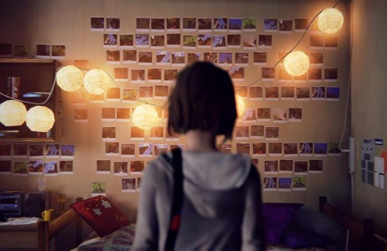

Life Is Strange es un videojuego episódico de aventura
gráfica desarrollado por Dontnod Entertainment y distribuido
por Square Enix. El juego se compone de cinco episodios.
El primero fue lanzado el 30 de enero de 2015 para Microsoft
Windows, PlayStation 4, PlayStation 3, Xbox One y Xbox 360.
Life Is Strange recibió seis nominaciones en los Golden Joystick Awards.
La historia tiene lugar en Arcadia Bay y gira en torno a Max Caulfield,
una estudiante de fotografía que descubre que tiene el poder de viajar a
través del tiempo, logrando rebobinar hacia atrás y produciendo un efecto
mariposa que permite cambiar el pasado. Las acciones del personaje harán
capaz de ajustar el relato que se desarrolla, y formarlo de nuevo rebobinando
al pasado según el antojo del jugador. Desde su lanzamiento, el juego ha sido
aclamado por la crítica, destacando mayormente el desarrollo de los personajes
y el juego mecánico, obteniendo a su vez diversos premios y reconocimientos.
Las ventas alcanzaron un millón de copias a finales de julio 2015.
